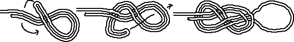

Dubbele Achtknoop
Gebruik
De dubbele achtknoop is een door klimmers veel gebruikte knoop. De knoop is snel te leggen en is veiliger dan de paalsteek. Er is veel discussie of het losse eind nog een stopper behoeft of niet. Snelheid van leggen/losmaken is ook iets waar je voor veiligheid rekening mee moet houden.
Methode
De wijze van leggen is gelijk aan het leggen van een gewone achtknoop, maar dan met een dubbel touw. Dit is alleen toepasbaar als de lus pas na het leggen ergens om gelegd wordt.
